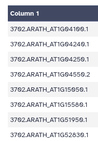
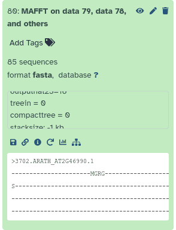
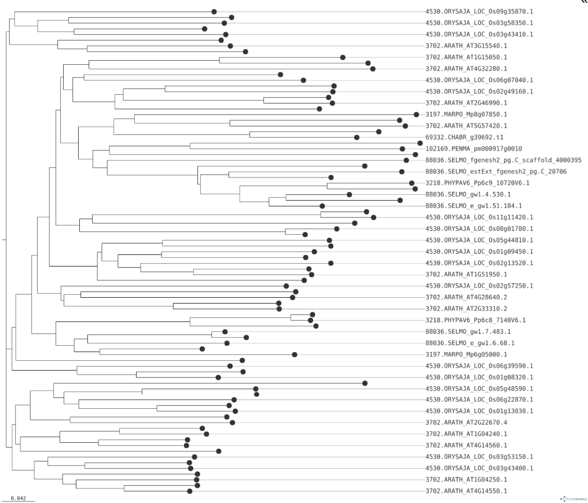

Identification and Evolutionary Analysis of Transcription-Associated Proteins in Streptophyte algae and Land plants
| Author(s) |
|
| Reviewers |
|
OverviewQuestions:
Objectives:
What are transcription-associated proteins (TAPs)?
How can we identify TAPs from a given proteome dataset?
How do we construct a phylogenetic tree for TAPs?
Requirements:
Understand the role of TAPs
Learn how to identify TAPs from a given proteome using TAPScan
Extract FASTA sequences using sequence ID/header
Perform sequence alignment using MAFFT
Construct phylogenetic tree for TAPs
Time estimation: 2 hoursSupporting Materials:Published: Mar 26, 2025Last modification: Apr 27, 2025License: Tutorial Content is licensed under Creative Commons Attribution 4.0 International License. The GTN Framework is licensed under MITpurl PURL: https://gxy.io/GTN:T00511rating Rating: 5.0 (1 recent ratings, 1 all time)version Revision: 2
The regulated expression of genes is essential for defining morphology, functional capacity, and developmental fate of both solitary living cells as well as cells inhabiting the social environment of a multicellular organism. In this regard, the regulation of transcription, that is, the synthesis of messenger RNA from a genomic DNA template, plays a crucial role. It contributes to the control of temporal and spatial RNA and protein levels in a cell and therefore has an essential function in all living organisms. Transcription‐associated proteins (TAPs) are essential players in gene regulatory networks (GRNs) as they involved in transcriptional regulation. TAPs are broadly classified into transcription factors (TFs) and transcriptional regulators (TRs). TFs bind sequence‐specifically to regulatory elements, resulting in enhancing or repressing of transcription (Richardt et al. 2007; Wilhelmsson et al. 2017). TRs, on the other hand, are involved in protein–protein interactions, may serve as regulators at the transcriptional core complex, as co‐activators and co‐repressors, chromatin modification or methylation. Additionally, there are proteins referred to as putative TAPs (PTs) that are thought to be involved in the regulation of transcription, but their exact function is undefined (Richardt et al. 2007).
TAPScan v4 (Petroll et al. 2024) is a comprehensive tool for annotating TAPs with a special focus on species belonging to the Archaeplastida. In general, the detection of TAPs is based on the detection of highly conserved protein domains.
In this tutorial, we will illustrate the identification of TAPs in streptophyte algae and land plants using TAPScan Classify, followed by construction of the phylogenetic tree.
AgendaIn this tutorial, we will cover:
Get data
In this tutorial, we will use representative protein sequences obtained from the Genome Zoo database. The selected sequences represent different lineages:
- Streptophyte Algae:
- Chara braunii (CHABR)
- Penium margaritaceum (PENMA)
- Bryophytes & Land Plants
- Marchantia polymorpha (MARPO)
- Physcomitrium patens (PHYPAV6)
- Oryza sativa (spp. japonica) (ORYSAJA)
- Selaginella moellendorffii (SELMO)
- Arabidopsis thaliana (ARATH)
Hands On: Prepare your Analysis History
Create a new history for this tutorial and give it a proper name
To create a new history simply click the new-history icon at the top of the history panel:
Rename the history to something descriptive.
- for example “TAP analysis in Streptophyte algae and Land plants”
- Click on galaxy-pencil (Edit) next to the history name (which by default is “Unnamed history”)
- Type the new name
- Click on Save
- To cancel renaming, click the galaxy-undo “Cancel” button
If you do not have the galaxy-pencil (Edit) next to the history name (which can be the case if you are using an older version of Galaxy) do the following:
- Click on Unnamed history (or the current name of the history) (Click to rename history) at the top of your history panel
- Type the new name
- Press Enter

Now, we need to import the data
Hands On: Import datasets
Import the following from Zenodo or from the shared data library:
https://zenodo.org/records/15056031/files/ARATH.fa https://zenodo.org/records/15056031/files/CHABR.fa https://zenodo.org/records/15056031/files/MARPO.fa https://zenodo.org/records/15056031/files/PENMA.fa https://zenodo.org/records/15056031/files/SELMO.fa https://zenodo.org/records/15056031/files/PHYPAV6.fa https://zenodo.org/records/15056031/files/ORYSAJA.fa
- Copy the link location
Click galaxy-upload Upload Data at the top of the tool panel
- Select galaxy-wf-edit Paste/Fetch Data
Paste the link(s) into the text field
Press Start
- Close the window
As an alternative to uploading the data from a URL or your computer, the files may also have been made available from a shared data library:
- Go into Libraries (left panel)
- Navigate to the correct folder as indicated by your instructor.
- On most Galaxies tutorial data will be provided in a folder named GTN - Material –> Topic Name -> Tutorial Name.
- Select the desired files
- Click on Add to History galaxy-dropdown near the top and select as Datasets from the dropdown menu
In the pop-up window, choose
- “Select history”: the history you want to import the data to (or create a new one)
- Click on Import
Create a dataset collection with all the input files
- name your collection
input sequences
- Click on galaxy-selector Select Items at the top of the history panel
- Check all the datasets in your history you would like to include
Click n of N selected and choose Build Dataset List
- Enter a name for your collection
- Click Create list to build your collection
- Click on the checkmark icon at the top of your history again


If you were successful, all the input files should now be available as dataset collection in your history.
Identification of TAPs
In order to detect TAPs from the given proteome(s), each sequence out of a species protein set is first scanned for protein domains (stored as profile Hidden Markov Models) using hmmsearch. The domains list consists of 154 profile HMMs and functions as the domain reference during the hmmsearch in background.
Afterwards, TAPScan Classify applies specialized rules to assign the protein sequences, scanned for 137 different TAP families, ensuring accurate family assignment using GA-thresholds and coverage values.
Perform TAPScan Classify
Now that our dataset collection is ready, we can run TAPScan Classify to detect TAPs in all species.
Hands On: Detect TAPs
- TAPScan Classify ( Galaxy version 4.76+galaxy0) with the following parameters:
- param-collection “Proteins in FASTA format”:
input sequences(the dataset collection you just made)
- Click on param-collection Dataset collection in front of the input parameter you want to supply the collection to.
- Select the collection you want to use from the list
Comment: on parameterIf you would like to have Output table from the HMMer Search, Please Check on the box like below:
- “Output the HMMer domain hits table?”:
Yes
TAPScan Classify provides the user with three different output files. Each output file is tab-separated.
- Output 1: “Detected TAPs” - contains the detected domains and finally assigned TAP family for each gene ID. If domains are assigned to a sequence but not all rules are fulfilled, the sequence is assigned to “0_no_family_found”.
- Output 2: “Family Counts” - is a summary of the number of members for each TAP family.
- Output 3: “Detected TAPs Extra” - is similar to output 1 but contains additional information.
Below is an example of the “Detected TAPs Extra” output. It has 5 columns, the Sequence IDs, followed by the classification into a TAP family, subfamily, the number of classifications, and domains.
Question
- What is the output format of TAPScan Classify?
- How many sequences belong to the “0_no_family_found” in Arabidopsis thaliana (ARATH) ?
- What extra information does Output 3 include compared to Output 1?
- This is written on the history outputs in Galaxy
- Output 2, “Counts”, contains this information
- Open one of the files in output 1 (Detected TAPs) and output 3 (Detected TAPs Extra), and compare the column headers
- Tabular
- 675, You can find this number by clicking on the eye button for Galaxy dataset output 2 for ARATH.
- Output 3 contains information about subfamilies with an additional column that provides more details beyond what is included in Output 1.
Now that we have the output from TAPScan Classify, we can filter the results by selecting a TAP family so that we can run phylogenetic analysis on that. To demonstrate, we chose the Aux/IAA TAP family. A brief overview of this TAP family: Aux/IAA proteins function as transcriptional repressors (TRs) in the auxin signaling pathway. They inhibit the expression of auxin-responsive genes by dimerizing with auxin response factor (ARF) transcriptional activators. This repression prevents ARFs from activating their target genes, thereby controlling auxin-regulated processes such as cell division, elongation, and differentiation (Tiwari et al. 2004)
In order to filter the TAPScan output, we need to first filter either Output 1 or Output 3 by using the Filter tool. This will allow us to select only the entries corresponding to Aux/IAA TAP family.
Hands On: Filter the TAPScan output Based on the Column
- Filter - data on any column using simple expressions with the following parameters:
- param-file “Filter”:
Detected TAPs(Output 1 of TAPScan Classify tool)- “With following condition”:
c2=='Aux/IAA'- “Number of header lines to skip”:
1Comment: What's happening in this section?This step filters the TAPScan results to retain only sequences classified as belonging to the our desired (Aux/IAA) TAP family.
QuestionHow many sequences belong to the ‘Aux/IAA’ TAP family in Arabidopsis thaliana (ARATH), excluding the header line?
29, You can find this number by expanding the Galaxy dataset output for ARATH.
you can see “30 lines, 4 columns”, but one line is the header line, so 29 sequences in total
Next, we would like to create FASTA files containing only those sequences belonging to this TAP family. In order to do that, we first need to create a list of Sequnce IDs. This information is already in the first column of our output, so we will cut the first column to retain only the sequence IDs. Then, we will remove the header line to ensure a clean list of sequence identifiers for further analysis.
Hands On: Cut and Remove Header from Sequence IDs
- Cut - columns from a table with the following parameters:
- “Cut columns”:
c1- param-collection “From”: output of Filter tool
Remove beginning - of a file with the following parameters:
- “Remove first*“:
1- param-collection “from”: output of Cut tool
- Examine galaxy-eye the output
- You should have a list of only sequence IDs

Question
- How many sequences belonged to our TAP family for Marchantia polymorpha (MARPO)?
- What is the average number of sequences in the Aux/IAA TAP family for the Streptophyte Algae? [ Chara braunii (CHABR) and Penium margaritaceum (PENMA)]?
- And for Bryophytes & Land Plants?
- What does this suggest?
- MARPO output has 3 lines, so that means 3 of the gene sequence in Marchantia polymorpha belonged to the Aux/IAA TAP family.
- CHABR has 2 sequences, PENMA has 3, so the average is 2.5
- For the Bryohpytes & Land plants we have ARATH(29) + MARPO(3) + SELMO (10) + PHYPAV6 (5) + ORYSAJA (33) = 80, divided by 5 is average of 16 genes
- While our dataset is quite small, we observe a lower number of Aux/IAA proteins in streptophyte algae compared to bryophytes and land plants. This suggests that the Aux/IAA protein family expanded as plants transitioned from aquatic to terrestrial environments, where more complex signaling mechanisms were required for growth regulation.
Now that we have our list of sequence IDs belonging to the Aux/IAA TAP family, we will now extract the corresponding FASTA sequences from our input dataset. We will use these FASTA sequences to create our evolutionary tree.
Extract the sequences for TAP families
Hands On: Extract the FASTA sequences
- Filter FASTA - on the headers and/or the sequences ( Galaxy version 2.3) with the following parameters:
- param-collection “FASTA sequences”:
input sequences(our original input dataset collection)- “Criteria for filtering on the headers”:
List of IDs
- param-file “List of IDs to extract sequences for”: output of Remove beginning tool
- “Match IDs by”:
Default: ID is expected at the beginning: >IDQuestion
- What if my IDs don’t match?
- If your FASTA file includes additional annotations in the headers, you may need to preprocess your ID list or modify the matching criteria.
- Examine galaxy-eye the output files
- does everything look as expected?
- remember, we are expecting 29 sequences for Arabidopsis thaliana (ARATH) and 3 for Marchantia polymorpha (MARPO)
- it is always a good idea to check the outputs of an analysis step before continuing.
Evolutionary Analysis
We have now identified all sequences belonging to the Aux/IAA TAP family, across multiple species. Let’s perform an evolutionary analysis on this data.
Multiple Sequence Alignment (MSA)
First, we will perform a multiple sequence alignment in order to determine the similarity between all sequences in our TAP family.
Hands On: MSA of our protein sequences
- MAFFT ( Galaxy version 7.526+galaxy1) with the following parameters:
- “For multiple inputs generate”:
a single MSA of all sequences from all inputs
- In “Input batch”:
- param-repeat “Insert Input batch”
- param-collection “Sequences to align”: the collection of FASTA files from our TAP families (output of Filter FASTA tool)
- “Type of Sequences”: Amino Acids
- “Support unusual characters?”:
Yes- “MAFFT flavour”:
Auto- “Reorder output”:
YesQuestion
- How many sequences do we have in total?
- 85 sequences. You can find this number by expanding the Galaxy dataset output from MAFFT.

- Examine galaxy-eye the output file generated by MAFFT
- you will see something similar to:
>3702.ARATH_AT2G46990.1 -----PAVEDAEYVA--------------------------------------------- ---------------------------------------------------AVEEEE--- ------------------------------------------------------------ ---------------ENECNS--VGSFYVKVNMEGVPIGRKIDLMSLNGYRDLIRTLDFM FNA-SILW-AE---------------------EE-------------------------- DMC---NEKSHVLTYADKEGDW-------------------------------------- ----MMVGDVPWEMFL-------------STVRRLKISRANYHY---------------- ------------------------------------------------------------ --------------------------------------------------------- >3702.ARATH_AT3G62100.1 ----------------------MGRG-------------------------RSSSSSSIE S----------------------------------------------------------- -----DGVGAAEEMM--------------------------------------------- ---------------------------------------------------IMEEEE--- ------------------------------------------------------------ ---------------QNECNS--VGSFYVKVNMEGVPIGRKIDLLSLNGYHDLITTLDYM FNA-SILW-AE---------------------EE-------------------------- DMC---SEKSHVLTYADKEGDW-------------------------------------- ----MMVGDVPWEMFL-------------SSVRRLKISRAYHY-----------------Question: What's in an alignment?
- What do you see in this file?
- What do the dashes signify?
- This file contains a single alignment of all sequences. This format is similar to a FASTA file, but contains additional characters (e.g. dashes,
-)- Dashes indicate a gap in the alignment at that position for the sequence in question
A nicer way to look at this output, is in the MSA viewer that is built into Galaxy.
Hands On: Visualise our Multiple Sequence Alignment
- Click on the MAFFT output to expand it again in your history
- Click on the galaxy-visualise Visualize button
- In the main window, pick the “Multiple Sequence Alignment” option
You will see a visual representation of you MSA
Question: Alignment visualisation
- What do you see?
- How long is the total alignment?
You see every sequence in your dataset aligned together. On the left you see the sequence IDs. You can scroll down here to see more. On the top you see the position in the alignment. You can scroll left and right here to view different parts of the alignment.
Where amino acids align, you will see a colored square and the letter indicating the amino acid. Where there is a gap, you will see a dash (
-). At the top, you will also see a histogram indicating how many sequences align at that position.The bottom half of the screen shows a zoomed-out version of the entire alignment.
If you scroll all the way right in the aligment viewer, you will see a total length of around 1856 amino acids. This may not be the exact number, but gives you a pretty good idea.


Alignment trimming
Next, we would like to clean up this alignment by e.g. removing spurious sequences or poorly aligned regions from our multiple sequence alignment. tool TrimAl is a tool that can do this
Hands On: Clean up our alignment
- trimAl ( Galaxy version 1.5.0+galaxy1) with the following parameters:
- param-file “Alignment file”: output of MAFFT tool
- “Select trimming mode from the list”:
custom mode
- “Gap threshold”: 0.5
- “Similarity Threshold” 0.001
Question
- How many sequences were removed in this trimming step?
- None. We still have all 85 sequences, meaning none of them were removed based on the gap threshold (0.5) or similarity threshold (0.001). However, TrimAl may have removed poorly aligned regions where gaps or similarity values did not meet the specified thresholds.
Examine galaxy-eye the HTML report output from Trimal
Question
- Did trimAl remove any poorly aligned regions from our alignment?
- How long was the total alignment before and after trimming?
At the very top of the report, we can see the number of deleted and kept sequences and residues. As we already determined, all of the 85 sequences were kept, but 928 residues (columns in the alignment) were removed
We kept 929 residues and removed 928, so the total length before trimming was 929+928=1857.

{kind=link}
{kind=link}
{kind=link}
{kind=link}
{kind=link}
{kind=link}
Tree Generation
We can now analyse this multiple sequence alignment and determine the evolutionary tree.
Hands On: Tree Generationi with Quicktree
- Quicktree ( Galaxy version 2.5+galaxy0) with the following parameters:
- “Provide an alignment file or a distance matrix?”:
Alignment File
- param-file “Alignment file”:
Trimmed alignment(output of trimAl tool)- “Calcuate bootstrap values with n iterations”:
100- Examine galaxy-eye the output from Quicktree
- You will see something like:
( ( ( 4530.ORYSAJA_LOC_Os09g35870.1:0.24435, ( ( 4530.ORYSAJA_LOC_Os07g08460.1:0.19987, 4530.ORYSAJA_LOC_Os03g58350.1:0.19093) 94:0.03760, ( 4530.ORYSAJA_LOC_Os12g40900.1:0.15994, 4530.ORYSAJA_LOC_Os03g43410.1:0.18580) 97:0.04447) 67:0.02837) 19:0.00640,- This is Newick format, but not very informative to look at like this
- Newick trees are best viewed with special visualization tools, lets try one now.
- Expand the output of Quicktree, and click on the galaxy-visualize visualise button
- Click on “Phylogenetic Tree Visualization”
- You should see a tree like

{kind=link}
There are different algorithms to create trees, which will produce different outputs. Quicktree uses the Neighbour-joining algorithm.
Which algorithm is best for you, depends on your data and experiment.
Another tool that gives you a bit more control over your tree generation is IQ-TREE ( Galaxy version 2.3.6+galaxy0)
If you would like to do that now, you can run IQ-tree as follows, which will generate both a Maximum-likelihood (ML) tree, as a Neighbour-joining (NJ) tree. These trees can be visualized with ETE-toolkit in the same way as you did for Quicktree
- IQ-TREE ( Galaxy version 2.3.6+galaxy0) with the following parameters:
- In “General options”:
- param-file “Specify input alignment file in PHYLIP, FASTA, NEXUS, CLUSTAL or MSF format.”:
trimmed_output(output of trimAl tool)- “Specify sequence type”:
AA- In “Modelling Parameters”:
- In “Automatic model selection”:
- “Do you want to use a custom model”:
Yes, I want to use a custom model- “Model”:
MFP- In “Tree Parameters”:
- In “Single branch tests”:
- “Specify number of replicates (>=1000) to perform SH-like approximate likelihood ratio test”:
1000- In “Bootstrap Parameters”:
- In “Ultrafast bootstrap parameters”:
- “Specify number of bootstrap replicates”:
1000
Tree Visualisation
We already had a look at the tree using Galaxy’s built-in tree viewer, but sometimes it is nicer to look at with other tools. For example, the Phylogenetic Tree Viewer from ETE Toolkit. You could download your tree to your machine, and upload it to ETE toolkit, but you can also do this directly within Galaxy!
Hands On: Task description
- ETE tree viewer ( Galaxy version 3.1.3+galaxy0) with the following parameters:
- param-file “Newick Tree to visualise”: output of Quicktree tool
- “Add alignment information to image?”:
yes
- param-file “Multiple Alignment FASTA file”:
Trimmed alignment(output form TrimAl tool )- “Resolve Taxonomic IDs?”: Yes
- “Format of the output image.”:
PNG- Examine galaxy-eye the output image
You should see a tree image like this:
As you can see, in addition to the tree itself, this also contains a visualisation of the alignments, and the taxonomy.
QuestionWhat do we see in this tree?
We see that genes from the same group, such as land plants or bryophytes, cluster together, indicating their close evolutionary relationships and the potential for similar roles in auxin signaling. The branching patterns suggest that certain Aux/IAA genes from land plants and bryophytes are more closely related to each other, reflecting their shared functions in regulating growth and development under land conditions.
{kind=link}
Note that ETE toolkit will display this taxonomy based on your FASTA headers. If your sequence names start with the NCBI TaxID followed by a period, ETE TreeViewer will display them.
For example, here are the headers in our file:
>88036.SELMO_e_gw1.105.41.1 -----------MNELLRLMPRDASIIGAIFVKLELLQL-V >88036.SELMO_fgenesh2_pg.C_scaffold_136000057 GPS-KERRRKQMNELLRLMPRDASIIGAIFVKLELLQLSIwhere
88036is the NCBI TaxID for Selaginella moellendortffii
Conclusion
In this tutorial, utilizing the protein sequences of streptophyte algae, bryophytes, and land plants, we detected the TAP families and explored the distribution and evolutionary history of Aux/IAA proteins. Aux/IAA proteins play a critical role in the auxin signaling pathway, regulating plant growth and development, especially in response to environmental changes. Using TAPScan Classify, we identified the presence of Aux/IAA proteins in these species and results showed lower number of Aux/IAA proteins in streptophyte algae compared to bryophytes and land plants. This suggests that the Aux/IAA protein family expanded as plants transitioned from aquatic to terrestrial environments, where more complex signaling mechanisms were required for growth regulation.
The phylogenetic tree analysis supported this finding, as genes from the same group, such as land plants or bryophytes, clustered together, indicating their close evolutionary relationships and the potential for similar roles in auxin signaling. The branching patterns suggest that certain Aux/IAA genes from land plants and bryophytes are more closely related to each other, reflecting their shared functions in regulating growth and development under land conditions.
You've Finished the Tutorial
Key points
TAPScan v4 is a comprehensive and highly reliable tool for genome-wide TAP annotation via domain profiles
Frequently Asked Questions
Have questions about this tutorial? Have a look at the available FAQ pages and support channelsUseful literature
Further information, including links to documentation and original publications, regarding the tools, analysis techniques and the interpretation of results described in this tutorial can be found here.
References
- Tiwari, S. B., G. Hagen, and T. J. Guilfoyle, 2004 Aux/IAA Proteins Contain a Potent Transcriptional Repression Domain. The Plant Cell 16: 10.1105/tpc.017384
- Richardt, S., D. Lang, R. Reski, W. Frank, and S. A. Rensing, 2007 PlanTAPDB, a Phylogeny-Based Resource of Plant Transcription-Associated Proteins. Plant Physiology 143: 1452–1466. 10.1104/pp.107.095760
- Wilhelmsson, P. K. I., C. Mühlich, K. K. Ullrich, and S. A. Rensing, 2017 Comprehensive Genome-Wide Classification Reveals That Many Plant-Specific Transcription Factors Evolved in Streptophyte Algae. Genome Biology and Evolution 9: 3384–3397. 10.1093/gbe/evx258
- Petroll, R., D. Varshney, S. Hiltemann, H. Finke, M. Schreiber et al., 2024 Enhanced sensitivity of
TAPscan v4 enables comprehensive analysis of streptophyte transcription factor evolution. The Plant Journal 121: 10.1111/tpj.17184
Feedback
Did you use this material as an instructor? Feel free to give us feedback on how it went.
Did you use this material as a learner or student? Click the form below to leave feedback.
Citing this Tutorial
- Deepti Varshney, Saskia Hiltemann, Identification and Evolutionary Analysis of Transcription-Associated Proteins in Streptophyte algae and Land plants (Galaxy Training Materials). https://training.galaxyproject.org/training-material/topics/sequence-analysis/tutorials/tapscan-streptophyte-algae/tutorial.html Online; accessed TODAY
- Hiltemann, Saskia, Rasche, Helena et al., 2023 Galaxy Training: A Powerful Framework for Teaching! PLOS Computational Biology 10.1371/journal.pcbi.1010752
- Batut et al., 2018 Community-Driven Data Analysis Training for Biology Cell Systems 10.1016/j.cels.2018.05.012
@misc{sequence-analysis-tapscan-streptophyte-algae, author = "Deepti Varshney and Saskia Hiltemann", title = "Identification and Evolutionary Analysis of Transcription-Associated Proteins in Streptophyte algae and Land plants (Galaxy Training Materials)", year = "", month = "", day = "", url = "\url{https://training.galaxyproject.org/training-material/topics/sequence-analysis/tutorials/tapscan-streptophyte-algae/tutorial.html}", note = "[Online; accessed TODAY]" } @article{Hiltemann_2023, doi = {10.1371/journal.pcbi.1010752}, url = {https://doi.org/10.1371%2Fjournal.pcbi.1010752}, year = 2023, month = {jan}, publisher = {Public Library of Science ({PLoS})}, volume = {19}, number = {1}, pages = {e1010752}, author = {Saskia Hiltemann and Helena Rasche and Simon Gladman and Hans-Rudolf Hotz and Delphine Larivi{\`{e}}re and Daniel Blankenberg and Pratik D. Jagtap and Thomas Wollmann and Anthony Bretaudeau and Nadia Gou{\'{e}} and Timothy J. Griffin and Coline Royaux and Yvan Le Bras and Subina Mehta and Anna Syme and Frederik Coppens and Bert Droesbeke and Nicola Soranzo and Wendi Bacon and Fotis Psomopoulos and Crist{\'{o}}bal Gallardo-Alba and John Davis and Melanie Christine Föll and Matthias Fahrner and Maria A. Doyle and Beatriz Serrano-Solano and Anne Claire Fouilloux and Peter van Heusden and Wolfgang Maier and Dave Clements and Florian Heyl and Björn Grüning and B{\'{e}}r{\'{e}}nice Batut and}, editor = {Francis Ouellette}, title = {Galaxy Training: A powerful framework for teaching!}, journal = {PLoS Comput Biol} }
Funding
These individuals or organisations provided funding support for the development of this resource
Congratulations on successfully completing this tutorial!You can use Ephemeris's
shed-tools installcommand to install the tools used in this tutorial.shed-tools install [-g GALAXY] [-a API_KEY] -t <(curl https://training.galaxyproject.org/training-material/api/topics/sequence-analysis/tutorials/tapscan-streptophyte-algae/tutorial.json | jq .admin_install_yaml -r)Alternatively you can copy and paste the following YAML
--- install_tool_dependencies: true install_repository_dependencies: true install_resolver_dependencies: true tools: - name: tapscan owner: bgruening revisions: c4f865bd101a tool_panel_section_label: Annotation tool_shed_url: https://toolshed.g2.bx.psu.edu/ - name: filter_by_fasta_ids owner: galaxyp revisions: dff7df6fcab5 tool_panel_section_label: Proteomics tool_shed_url: https://toolshed.g2.bx.psu.edu/ - name: ete_treeviewer owner: iuc revisions: 2d4402c70eed tool_panel_section_label: Phylogenetics tool_shed_url: https://toolshed.g2.bx.psu.edu/ - name: iqtree owner: iuc revisions: f87ac61981f0 tool_panel_section_label: Evolution tool_shed_url: https://toolshed.g2.bx.psu.edu/ - name: quicktree owner: iuc revisions: ab50e1a75a77 tool_panel_section_label: Evolution tool_shed_url: https://toolshed.g2.bx.psu.edu/ - name: trimal owner: iuc revisions: e379c0202766 tool_panel_section_label: Multiple Alignments tool_shed_url: https://toolshed.g2.bx.psu.edu/ - name: mafft owner: rnateam revisions: 1233363389c1 tool_panel_section_label: Multiple Alignments tool_shed_url: https://toolshed.g2.bx.psu.edu/